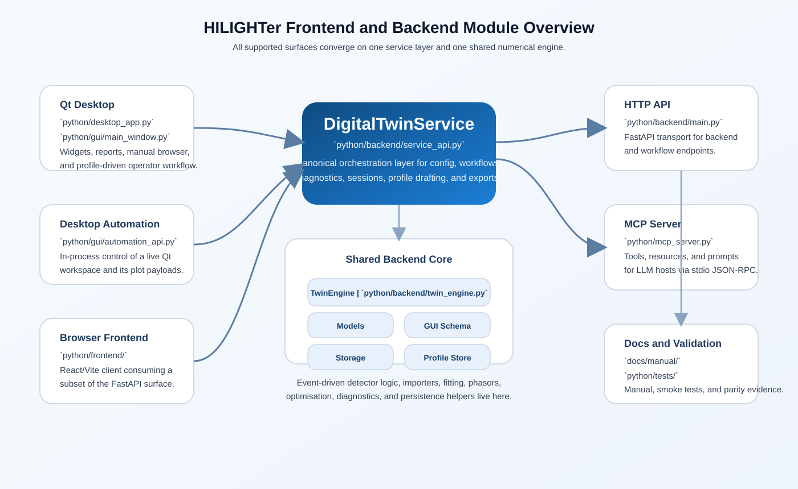

HILIGHTer Digital Twin documentation set
This is the canonical manual for the active Python Digital Twin. It documents the desktop workspace, backend architecture, mathematical intent, profile system, and the MCP/API surfaces that now share the same computational engine.
Qt workspace for simulation, validation, optimisation, diagnostics, and reports.
Service API, HTTP API, desktop automation, MCP, and the browser client all derive from the same backend state.
Precision, Fisher metrics, conditional efficiency, photon survival, and event-level detector artefacts are documented explicitly.
Current architecture
Plain English
HILIGHTer is no longer a thin plotting app around one fitting routine. It is a full engineering workspace for virtual FLIM instrument design. The same backend powers the desktop, automated workflows, HTTP API, report export, and MCP-assisted LLM workflows.
For specialists
The source of truth is python/backend/twin_engine.py plus the orchestration layer in python/backend/service_api.py. The desktop controller maps onto PhysicsConfig in python/backend/models.py. The event-driven detector engine lives in python/backend/event_driven.py. Instrument definitions are versioned JSON profiles under python/profiles/instruments/. The multi-page manual rooted here is the canonical documentation tree.
| Layer | Main file(s) | Role |
|---|---|---|
| Physics engine | python/backend/twin_engine.py | Excitation, latent decay PDFs, detector transfer approximation, Fisher analysis, Monte Carlo, optimisation, diagnostics, phasors, image synthesis, and fitting. |
| Chronological detector core | python/backend/event_driven.py | Explicit event-level detector simulation for dead time, routing, multihit capacity, and shared-resource behaviour. |
| Shared config | python/backend/models.py | Defines PhysicsConfig and persistent workflow settings. |
| Desktop workspace | python/gui/main_window.py and widgets | Main operator interface. |
| Browser frontend | python/frontend/ | Secondary React/Vite client backed by the HTTP API. |
| Desktop automation | python/gui/automation_api.py | In-process automation surface for the live Qt workspace. |
| MCP bridge | python/mcp_server.py | Tool, resource, and prompt surface for LLM hosts. |
| Manual | docs/manual/ | Operator, engineering, and automation reference. |
Graphical module overview
The desktop, browser frontend, HTTP API, and MCP server all converge on the same service layer and numerical engine.

Current precision semantics
Plain English
The important distinction is now explicit: HILIGHTer separates the statistical efficiency of the detected photons from the survival of photons through the instrument.
For specialists
The backend now treats the detected-photon quantity as canonical. The collected-photon metric is the conditional precision factor, while upstream-budget reporting is a rescaling layer. Monte Carlo payloads carry both f_value_conditional and survival_eta. The default optimisation/reporting photon basis is collected.
| Quantity | Meaning | Where it appears |
|---|---|---|
F_cond | Precision factor referenced to collected photons only. | Internal theory path, Monte Carlo payloads, and the basis used for resolvability. |
eta | Photon survival fraction between the chosen reference budget and the actually used photons. | Reported as survival_eta in Monte Carlo payloads. |
F_eff | Upstream-effective precision after photon survival is included. | Derived when the user chooses acquisition-period or all-photon reporting bases. |
F^-2 | Photon efficiency / information efficiency. | Precision widget and optimisation objectives. |
| Resolvability | Single-exponential-only metric derived from conditional F and the precision photon count. | Precision widget only when the run is an exponential N=1 sweep over tau1. |
See Maths for the current equations and code mapping.
Desktop workflow
Configure
Define decay model, laser/excitation, detection and gate geometry, validation settings, optimisation settings, and batch sweeps.
Run analysis
Generate ideal/theory/Monte Carlo precision curves, accuracy tracking, diagnostics, and optional bootstrap confidence intervals.
Optimise
Optimise detection gates, excitation profiles, or both, then inspect trajectories in the same widgets used for analysis.
Manage profiles
Save, repair, import, export, preview, and apply complete instrument definitions.
Inspect outputs
Use the precision, MLE accuracy, diagnostics, phasor, image, and pixel widgets as the main readout layer.
Learn the metrics
Open the interactive tutorial to explore Fisher information, precision figures of merit, and gate-design trade-offs visually.
Automate with MCP
Let an LLM inspect the current workspace, run workflows, and draft instrument profiles from vendor documents.
Key entry points
# Desktop run_desktop.bat # HTTP API python -m uvicorn python.backend.main:app --reload # MCP server python python/mcp_server.py # MCP smoke test python python/tools/mcp_smoke_test.py
The support/manual browser is available inside the desktop with Ctrl+H. The interactive tutorial widget is available with Ctrl+T. The legacy single-file manual entry point under docs/digital_twin_manual.html now redirects to this manual root.
Installation and startup
Plain English
The simplest supported path is to create a Python virtual environment in the repository root and launch the desktop with run_desktop.bat. The launcher starts the Python desktop bootstrap and installs missing desktop dependencies into the active environment if needed.
# Recommended desktop install python -m venv .venv .venv\Scripts\activate python -m pip install --upgrade pip run_desktop.bat # Optional explicit desktop dependency install python -m pip install -r python\desktop_requirements.txt # Backend/API install python -m pip install -r python\requirements.txt # Browser frontend cd python\frontend npm install npm run dev
The browser frontend is a secondary client and expects the FastAPI backend at http://localhost:8000. For current details, see the repository root README.md and python/frontend/README.md.
Recent important changes reflected in this manual
- The simulation-core badges and labels were updated to
Sim. coreandVal. core, withPoisson,Poisson (+DTF), andEvent-drivenwording. - Decay-model maths and detector-transfer maths are again visible from the controller through compact icon buttons.
- Background fitting now uses additive count semantics in the analysis path rather than only a fragile normalised-mixture interpretation.
tau2precision/validation issues in the gridded-MLE path were fixed; resolvability metrics are now gated to the supported single-exponentialtau1case.- The precision widget includes
Resolvability (R)andPhotons For R=3for the supported case, with the photon count taken from the precision pane unless overridden in the widget. - Batch Sweep includes
Count Rate via Pixel Dwell, which fixes the photon budget and varies dwell time to reach the target count-rate sweep. - Instrument-profile creation through MCP now supports vendor-document listing, reading, drafting, follow-up questions, and finalisation.
- Clipboard export settings now include named saved profiles, export-only grid and bounding-box styling, PNG/SVG selection, default/live export mode, and static legend export.